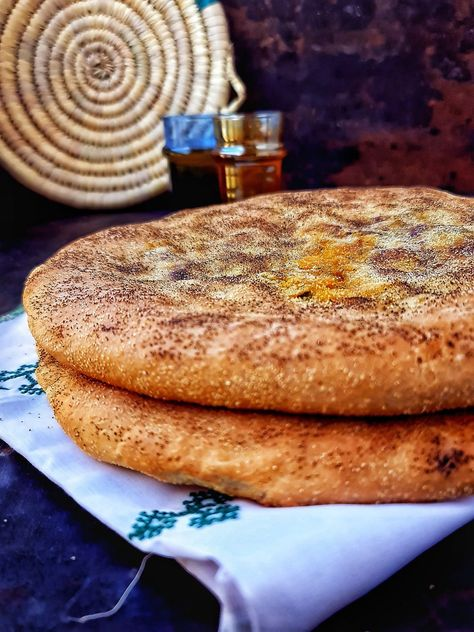
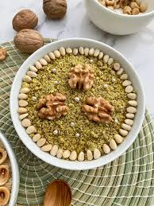
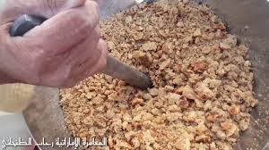

Taguella: The Bread of the Desert
Taguella is an iconic bread of the Saharan regions, highly valued by nomads and desert dwellers.
Texture and Flavor:
Prepared with semolina or flour, water, and a pinch of salt, the dough is buried in hot woodfire embers and covered with hot sand. This unique cooking method gives it a slightly smoky flavor, with a crisp crust and soft interior.
Accompaniments:
Traditionally served with melted butter or olive oil, sometimes sweetened with honey for a dessert variation. Families often enjoy it with a spicy sauce or sour milk.
Occasions:
Taguella is a staple for nomads, perfect for simple preparation and sustenance during long journeys in the desert.


Chakhchoukha: The Pride of Celebrations
Chakhchoukha is a culinary star of festivities and special occasions, known for its hearty and comforting flavors.
Preparation:
The dish is made from thin, dry flatbreads called rougag, torn into small pieces and mixed with a rich sauce made of meat (typically lamb or chicken), chickpeas, tomatoes, onions, and local spices like cumin and paprika.
Kadid Variation:
Dried meat (kadid) is often added during religious celebrations such as Eid to enhance the flavor.
Communal Sharing:
Served in a large communal dish, Chakhchoukha fosters conviviality and bonding among diners.
Zgougou: A Festive Delight
Zgougou is a unique sweet dish made from black pine seeds, offering a distinctive flavor.
Ingredients:
The seeds are roasted, ground into a fine paste, and mixed with honey, sugar, or milk for a lighter consistency.
Consumption:
Often garnished with nuts like almonds or pistachios, Zgougou is enjoyed during special occasions, particularly family gatherings and religious festivities.
Symbolism:
This dessert reflects the ingenuity of desert inhabitants, using natural resources to create a delightful dish.


Madgoug: The Comforting Stew
Madgoug is a hearty, flavorful stew, often prepared for family meals or during periods of intense work.
Main Ingredients:
It features kadid (dried and salted meat) for its depth of flavor, slow-cooked with lentils or chickpeas, and seasoned with spices like turmeric, black pepper, and coriander.
Accompaniments:
Served with traditional bread such as Taguella to soak up the rich sauce.
Nutritional Value:
Packed with nutrients, Madgoug is perfect for providing energy in a challenging desert environment.
Each dish and culinary ritual of the Mozabite people tells a story, reflecting the ingenuity, resilience, and hospitality of the desert inhabitants. These traditional practices remain vibrant, passing ancestral knowledge to future generations.